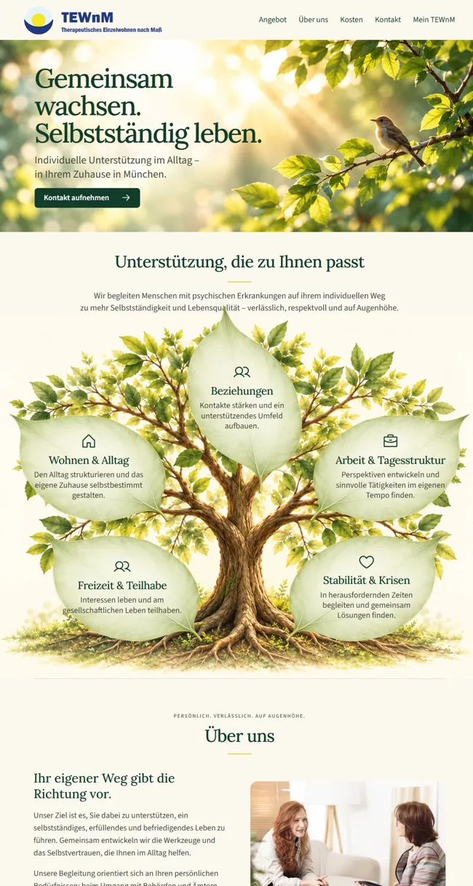
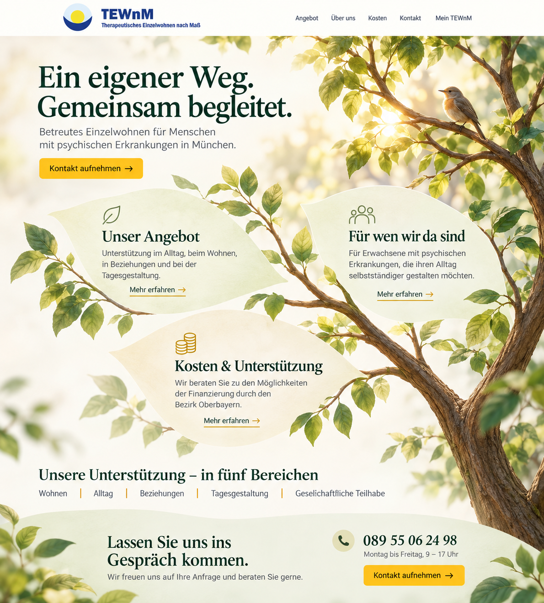

Website · Gestaltungsvorschläge
Zwei Wege. Ein gemeinsamer Gedanke.
Ein Baum als Sinnbild für Entwicklung, Halt und ein selbstbestimmtes Leben.
Entdecken Sie die beiden Entwürfe – auch auf Ihrem Smartphone.

Option 1
Gemeinsam wachsen
Fünf Angebotsblätter, persönliche Einblicke und ein Kontaktformular am Seitenende.
Vorschau öffnen →
Option 2
Ein eigener Weg
Ein ruhiger Einstieg und drei Blätter für Angebot, Zielgruppe und Finanzierung.
Vorschau öffnen →Gestaltungsvorschläge zur Abstimmung. Texte und Kontaktdaten vor Veröffentlichung prüfen.